수질환경기사 (2018-03-04 기출문제)
1과목: 수질오염개론
1. 수자원의 순환에서 가장 큰 비중을 차지하는 것은?
- 해양으로의 강우
- 증발
- 증산
- 육지로의 강우
(정답률: 82%)

2. C2H615g이 완전히 산화하는데 필요한 이론적 산소량(g)은?
- 약 46
- 약 56
- 약 66
- 약 76
(정답률: 79%)
3. PbSO4가. 25℃ 수용액내에서 용해도가 0.075g/L이라면 용해도적은? (단, Pb 원자량 = 207)
- 3.4×10-9
- 4.7×10-9
- 5.8×10-8
- 6.1×10-8
(정답률: 58%)
4. 하천의 자정계수(f)에 관한 설명으로 맞는 것은? (단, 기타 조건은 같다고 가정함)
- 수온이 상승할수록 자정계수는 작아진다.
- 수온이 상승할수록 자정계수는 커진다.
- 수온이 상승하여도 자정계수는 변화가 없이 일정하다.
- 수온이 20℃인 경우, 자정계수는 가장 크며 그 이상의 수온에서는 점차로 낮아진다.
(정답률: 76%)
5. 하천수의 수온은 10℃이다. 20℃의 탈산소계수K(상용대수)가 0.1day-1일 떄 최종 BOD에 대한 BOD6의 비는? (단, KT=K20×1.047(T-20))
- 0.42
- 0.58
- 0.63
- 0.83
(정답률: 68%)
6. 피부점막, 호흡기로 흡입되어 국소 및 전신마비, 피부염, 색소 침착을 일으키며 안료, 색소, 유리공업 등이 주요 발생원인 중금속은?
- 비소
- 납
- 크롬
- 구리
(정답률: 70%)
7. 연못의 수면에 용존산소 농도가 11.3mg/L이고 수온이 20℃인 경우, 가장 적절한 판단이라 볼 수 있는 것은?
- 수면의 난류로 계속 폭기가 일어나 DO가 계속 높아질 가능성이 있다.
- 연못에 산화제가 유입되었을 가능성이 있다.
- 조류가 번식하여 DO가 과포화 되었을 가능성이 있다.
- 물속에 수산화물과 (중)탄산염을 포함하여 완충능력이 클 가능성이 있다.
(정답률: 74%)
8. 효소 및 기질이 효소-기질을 형성하는 가역 반응과 생성물 P를 이탈시키는 착화합물의 비가역 분해과정인 다음의 식에서 Michaelis 상수 Km은? (단, k1=1.0×107M-1s1,k-1=1.0×102s-1, k2=3.0×102s-1)
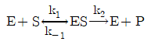
- 1.0×10-5M
- 2.0×10-5M
- 3.0×10-5M
- 4.0×10-5M
(정답률: 46%)
9. 다음 설명과 가장 관계있는 것은?
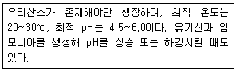
- 박테리아
- 균류
- 조류
- 원생동물
(정답률: 65%)
10. Formaldehyde(CH2O)의 COD/TOC비는?
- 1.37
- 1.67
- 2.37
- 2.67
(정답률: 76%)
11. 0.2NCH3COOH 100mL를 NaOH로 적정하고자 하여 0.2N NaOH 97.5mL를 가했을 때 이 용액의 pH는? (단, CH3COOH의 해리상수 Ka = 1.8 ×10-5)
- 3.67
- 5.56
- 6.34
- 6.87
(정답률: 29%)
12. 수질오염물질 중 중금속에 관한 설명으로 틀린 것은?
- 카드뮴 : 인체 내에서 투과성이 톺고 이동성이 있는 독성 메틸 유도체로 전환된다.
- 비소 : 인산염 광물에 존재해서 인 화합물 형태로 환경 중에 유입된다.
- 납 : 급성독성은 신장, 생식계통, 간 그리고 뇌와 중추신경계에 심각한 장애를 유발한다.
- 수은 : 수은 중독은 BAL, Ca2EDTA로 치료할 수 있다.
(정답률: 53%)
13. 분뇨를 퇴비화 처리할 때 초기의 최적 환경조건으로 가장 거리가 먼 것은?
- 축분에 수분조정을 위해 부자재를 혼합할 때 퇴비재료의 적정 C/N비는 25~30이 좋다.
- 부자재를 혼합하여 수부함량이 20~30% 되로록 한다.
- 퇴비화는 호기성미생물을 활용하는 기술이므로 산소공급을 충분히 한다.
- 초기 재료의 pH는 6.0~8.0으로 조정한다.
(정답률: 54%)
14. 부영양화 현상을 억제하는 방법으로 가장 거리가 먼 것은?
- 비료나 합성세제의 사용을 줄인다.
- 축산폐수의 유입을 막는다.
- 과잉번식된 조류(algae)는 황산망간(MnSO4)을 살포하여 제거 또는 억제할 수 있다.
- 하수처리장에서 질소와 인을 제거하기 위해 고도처리공정을 도입하여 질소, 인의 호소유입을 막는다.
(정답률: 78%)
15. 보통 농업용수의 수질평가 시 SAR로 정의하는데 이에 대한 설명으로 틀린 것은?
- SAR값이 20정도이면 Na+가 토양에 미치는 영향이 적다.
- SAR의 값은 Na+, Ca2+, Mg2+ 농도와 관계가 있다.
- 경수가 연수보다 토양에 더 좋은 영향을 미친다고 볼 수 있다.
- SAR의 계산식에 사용되는 이온의 농도는 meq/L를 사용한다.
(정답률: 77%)
16. 팔당호와 의암호와 같이 짧은 체류시간, 호수 수질의 수평정 균일성의 특징을 가지는 호수의 형태는?
- 하천형 호수
- 가지형 호수
- 저수지형 호수
- 하구형 호수
(정답률: 72%)
17. 분체증식을 하는 미생물을 회분배양하는 경우 미생물은 시간에 따라 5단계를 거치게 된다. 5단계 중 생존한 미생물의 중량보다 미생물 원형질의 전체 중량이 더 크게 되며, 미생물수가 최대가 되는 단계로 가장 적합한 것은?
- 증식단게
- 대수성장단계
- 감소성장단계
- 내생성장단계
(정답률: 68%)
18. 공장의 COD가 5000mg/L, BOD5가 2100mg/L이었다면 이 공장의 NBDCOD(mg/L)는? (단, K=BODu/BOD5=1.5)
- 1850
- 1550
- 1450
- 1250
(정답률: 66%)
19. 일차 반응에서 반응물질의 반감기가 5일 이라고 한다면 물질의 90%가 소모되는데 소요되는 시간(일)은?
- 약 14
- 약 17
- 약 19
- 약 22
(정답률: 73%)
20. 공장폐수의 BOD를 측정하였을 때 초기 DO는 8.4mg/L이고, 20℃에서 5일간 보관 후 측정한 DO는 3.6mg/L이었다. BOD 제거율이 90%가 되는 활성슬러지 처리시설에서 처리하였을 경우 방류수의 BOD(mg/L)는? (단, BOD 측정 시 희석배율 = 50배)
- 12
- 16
- 21
- 24
(정답률: 49%)
2과목: 상하수도계획
21. 펌프의 회전수 N = 2400 rpm, 최고 효율점의 토출량 Q = 162 m3/hr, 전양정 H = 90m인 원심펌프의 비회전도는?
- 약 115
- 약 125
- 약 135
- 약 145
(정답률: 65%)
22. 펌프의 공동현상(Cavitation)에 관한 설명 중 틀린 것은?
- 공동현상이 생기면 소음이 발생한다.
- 공동 속의 압력은 절대로 0이 되지는 않는다.
- 장시간이 경화하면 재료의 침식을 생기게 한다.
- 펌프의 흡입양정이 작아질수록 공동현상이 발생하기 쉽다.
(정답률: 67%)
23. 펌프의 토출유량은 1800 m3/hr, 흡입구의 유속은 4m/sec일 떄 펌프의 흡입구경(mm)은?
- 약 350
- 약 400
- 약 450
- 약 500
(정답률: 64%)
24. 하수관거 개ㆍ보수계획 수립 시 포함되어야 할 사항이 아닌 것은?
- 불명수량 조사
- 개ㆍ보수 우선순위의 결정
- 개ㆍ보수공사 점위의 설정
- 주변 인근 신설관거 현황 조사
(정답률: 63%)
25. 단면 ①(지름 0.5m)에서 유속이 2m/sec일 때, 단면 ②(지름 0.2m)에서의 유속(m/sec)은? (단, 만관 기준이며 유량은 변화 없음)
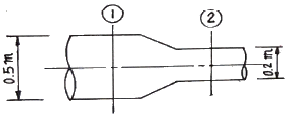
- 약 5.5
- 약 8.5
- 약 9.5
- 약 12.5
(정답률: 65%)
26. 상수도 최수시설 중 취수틀에 관한 설명으로 옳지 않은 것은?
- 구조가 간단하고 시공도 비교적 용이하다.
- 수중에 설치되므로 호소표면수는 취수할 수 없다.
- 단기간에 완성하고 안정된 취수가 가능하다.
- 보통 대형취수에 사용되며 수위변화에 영향이 적다.
(정답률: 66%)
27. 다음 하수관로에서 평균유속이 2.5m/sec일 때 흐르는 유량(m3/sec)은?
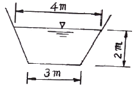
- 7.8
- 12.3
- 17.5
- 23.3
(정답률: 67%)
28. 관경 1100mm, 역사이펀 관거 내의 동수경사 2.4‰, 유속 2.15m/sec, 역사이펀 관거의 길이 L = 76m 일 때, 역사이펀의 손실수두(m)는? (단, β = 1.5, α = 0.⑤m 이다.)
- 0.29
- 0.39
- 0.49
- 0.59
(정답률: 47%)
29. 24시간 이상 장시간의 강우강도에 대해 가까운 저류시설 등을 계획할 경우에 적용하는 강우강도식은?
- Cleveland형
- Japanese형
- Talbot형
- Sherman형
(정답률: 65%)
30. 하수배제방식이 합류식인 경우 중계펌프장의 계획 하수량으로 가장 옳은 것은?
- 우천시 계획오수량
- 계획우수량
- 계획시간최대오수량
- 계획1일최대오수량
(정답률: 58%)
31. 우물의 양수량 결정 시 적용되는 “적정양수량”의 정의로 옳은 것은?
- 최대양수량의 70% 이하
- 최대양수량의 80% 이하
- 한계양수량의 70% 이하
- 한계양수량의 80% 이하
(정답률: 71%)
32. 우리나라 대규모 상수도의 수원으로 가장 많이 이용되며 오염물질에 노출을 주의해야 하는 수원은?
- 지표수
- 지하수
- 용천수
- 복류수
(정답률: 56%)
33. 계획송수량과 계획도수량의 기준이 되는 수량은?
- 계획송수량 : 계획1일최대급수량
계획도수량 : 계획시간최대급수량 - 계획송수량 : 계획시간최대급수량
계획도수량 : 계획1일최대급수량 - 계획송수량 : 계획취수량
계획도수량 : 계획1일최대급수량 - 계획송수량 : 계획1일최대급수량
계획도수량 : 계획취수량
(정답률: 64%)
34. 정수처리시설인 응집지 내의 플록형성지에 관한 설명 중 틀린 것은?
- 플록형성지는 혼화지와 침전지 사이에 위치하고 침전지에 붙여서 설치한다.
- 플록형성은 응집된 미소플록을 크게 성장시키기 위해 적당한 기계식교반이나 우류식교반이 필요하다.
- 플록형성지 내의 교반강도는 하류로 갈수록 점차 증가시키는 것이 바람직하다.
- 플록형성지는 단락류나 정체부가 생기지 않으면서 충분하게 교반될 수 있는 구조로 한다.
(정답률: 74%)
35. 상수도 기본계획 수립 시 기본적 사항인 계회1일최대급수량에 관한 내용으로 적절한 것은?
- 계획1일평균사용수량/계획유효율
- 계획1일평균사용수량/계획부하율
- 계획1일평균급수량/계획유효율
- 계획1일평균급수량/계획부하율
(정답률: 51%)
36. 취수시설 중 취수보의 위치 및 구조에 대한 고려사항으로 옳지 않은 것은?
- 유심이 취수구에 가까우며 안정되고 홍수에 의한 하상변화가 적은 지점으로 한다.
- 원칙적으로 철근콘크리트 구조로 한다.
- 침수 및 홍수시 수면상승으로 인하여 상류에 위치한 하천공작물 등에 미치는 영향이 적은 지점에 설치한다.
- 원칙적으로 홍수의 유심방향과 평행인 직선형으로 가능한 한 하천의 곡선부에 설치한다.
(정답률: 72%)
37. 길이 1.2km의 하수관이 2‰의 경사로 매설되어 있을 경우, 이 하수관 양 끝단간의 고저차(m) 는? (단, 기타사항은 고려하지 않음)
- 0.24
- 2.4
- 0.6
- 6.0
(정답률: 63%)
38. 도수관을 설계할 때 평균유속 기준으로 옳은 것은?
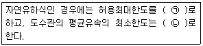
- ㉠ 1.5 m/s, ㉡ 0.3 m/s
- ㉠ 1.5 m/s, ㉡ 0.6 m/s
- ㉠ 3.0 m/s, ㉡ 0.3 m/s
- ㉠ 3.0 m/s, ㉡ 0.6 m/s
(정답률: 68%)
39. 하수 관거시설인 빗물받이의 설치에 관한 설명으로 틀린 것은?
- 협잡물 및 토사의 유입을 저감할 수 있는 방안을 고려하여야 한다.
- 설치위치는 보ㆍ차도 구분이 없는 경우에는 도로와 사유지의 경계에 설치한다.
- 도로 옆의 물이 모이기 쉬운 장소나 L형 측구의 유하 방향 하단부에 설치한다.
- 우수침수방지를 위하여 횡단보도 및 가옥의 출입구 앞에 설치함을 원칙으로 한다.
(정답률: 65%)
40. 상수처리를 위한 약품침전지의 구성과 구조로 틀린 것은?
- 슬러지의 퇴적심도로서 30cm 이상을 고려한다.
- 유효수심은 3~5.5m로 한다.
- 침전지 바닥에는 슬러지 배제에 편리하도록 배수구를 향하여 경사지게 한다.
- 고수위에서 침전지 벽체 상단까지의 여유고는 10cm 정도로 한다.
(정답률: 64%)
3과목: 수질오염방지기술
41. 정수장 응집 공정에 사용되는 화학 약품 중 나머지 셋과 그 용도가 다른 하나는?
- 오존
- 명반
- 폴리비닐아민
- 황산제일철
(정답률: 62%)
42. 처리유량이 200 m3/hr이고 염소요구량이 9.5mg/L. 잔류염소 농도가 0.5mg/L일 때 하루에 주입되는 염소의 양(kg/day)은?
- 2
- 12
- 22
- 48
(정답률: 55%)
43. 폐수를 처리하기 위해 시료 200 mL를 취하여 Jar Test하여 응집제와 응집보조제의 최적 주입농도를 구한 결과, Al2(SO4)3 200mg/L, Ca(OH)2 500mg/L였다. 폐수량이 500m3/day을 처리하는데 필요한 Al2(SO4)3의 양(kg/day)은?
- 50
- 100
- 150
- 200
(정답률: 49%)
44. 분뇨 소화슬러지 발생량은 1일 분뇨투입량의 10%이다. 발생된 소화슬러지의 탈수 전 함수율이 96%라고 하면 탈수된 소화슬러지의 1일 발생량(m3)은? (단, 분뇨투입량 = 360kL/day, 탈수된 소화슬러지의 함수율 = 72%, 분뇨 비중 = 1.0)
- 2.47
- 3.78
- 4.21
- 5.14
(정답률: 38%)
45. 유기물을 함유한 유체가 완전혼합연속반응조를 통과할 때 유기물의 농도가 200 mg/L에서 20 mg/L로 감소한다. 반응조 내의 반응이 일차반응이고 반응조체적이 20m3이며, 반응속도상수가 0.2day-1이라면 유체의 유량(m3/day)은?
- 0.11
- 0.22
- 0.33
- 0.44
(정답률: 45%)
46. BOD 400mg/L, 폐수량 1500m3/day의 공장폐수를 활성슬러지법으로 처리하고자 한다. BOD-MLSS 부하를 0.25kg/kgㆍday, MLSS 2500mg/L로 운전한다면 포기조의 크기(m3)는?
- 2000
- 1500
- 1250
- 960
(정답률: 55%)
47. 고농도의 액상 PCB 처리방법으로 가장 거리가 먼 것은/
- 방사선조사(코발트 60에 의한r선 조사)
- 연소법
- 자외선조사법
- 고온 고압 알칼리 분해법
(정답률: 55%)
48. 일반적으로 염소계 산화제를 사용하여 무해한 물질로 산화 분해시키는 처리방법을 사용하는 폐수의 종류는?
- 납을 함유한 폐수
- 시안을 함유한 폐수
- 유기인을 함유한 폐수
- 수은을 함유한 폐수
(정답률: 53%)
49. SS가 55mg/L, 유량이 13500m3/day인 흐름에 황산제이철(Fe2(SO4)3)을 응집제로 사용하여 50mg/L가 되도록 투입한다. 응집제를 투입하는 흐름에 알카리도가 없는 경우, 황산 제이철과 반응시키기 위해 투입하여야 하는 이론적인 석회(Ca(OH)2)의 양(kg/day)은? (단, Fe=55.8, S=32, O=16, Ca=40, H=1)
- 285
- 375
- 465
- 545
(정답률: 39%)
50. 바퀴모양의 극미동물이며, 상당히 양호한 생물학적 처리에 대한 지표미생물은?
- Psychodidae
- Rotifera
- Vorticella
- Sphaerotillus
(정답률: 54%)
51. 시공계획의 수립 시 준비단계에서 고려할 사항 중 가장 거리가 먼 것은?
- 계약조건, 설계도, 시방서 및 공사조건을 충분히 검토한 후 시공할 작업의 범위를 결정
- 이용 가능한 자원을 최대로 활용할 수 있도록 현장의 각종 제약조건을 분석
- 계획,실시, 검토, 통제의 단계를 거쳐 작성
- 예정공기를 벗어나지 않는 범위내에서 가장 경제적인 시공이 될 수 있는 공법과 공정계획 수립
(정답률: 59%)
52. MLSS의 농도가 1500mg/L인 슬러지를 부상법(Flotation)에 의해 농축시키고자 한다. 압축탱크의 유효전달 압력이 4기압이며 공기의 밀도를 1.3g/L, 공기의 용해량이 18.7mL/L일 때 Air/Solid(A/S)비는? (단, 유량 = 300m3/day, f = 0.5, 처리수의 반송을 없다.)(오류 신고가 접수된 문제입니다. 반드시 정답과 해설을 확인하시기 바랍니다.)
- 0.008
- 0.010
- 0.016
- 0.020
(정답률: 51%)
53. 연속회분식 활성슬러지법(SBR, Sequencing Batch Reactor)에 대한 설명으로 잘못된 것은?
- 단일 반응조에서 1주기(cycle) 중에 호기-무산소-혐기 등의 조건을 설정하여 질산화 탈질화를 도모할 수 있다.
- 충격부하 또는 첨두유량에 대한 대응성이 약하다.
- 처리용량이 큰 처리장에는 적용하기 어렵다.
- 질소(N)와 인(P)의 동시제거 시 운전의 유연성이 크다.
(정답률: 50%)
54. 혐기성 처리와 호기성 처리의 비교 설명으로 가장 거리가 먼 것은?
- 호기성 처리가 혐기성 처리보다 유출수의 수질이 더 좋다.
- 혐기성 처리가 호기성 처리보다 슬러지 발생량이 더 적다.
- 호기성 처리에서는 1차침전지가 필요하지만 혐기성 처리에서는 1차침전지가 필요 없다.
- 주어진 기질량에 대한 영양물질의 필요성은 호기성 처리보다 혐기성 처리에서 더 크다.
(정답률: 43%)
55. 부피가 2649m3인 탱크에서 G값을 50/s로 유지하기 위해 필요한 이론적 소요동력(W)과 패들 면적(m2)은? (단, 유체 점성 계수 1.139×10-3N×s/m2, 밀도 1000kg/m3, 직사각형 패들의 항력계수 1.8, 패들 주변속도 0.6m/s, 패들 상대속도 = 패들 주변속도 × 0.75로 가정, 패들 면적 A = [2P/(CㆍpㆍV3)]식 적용)
- 8543, 104
- 8543, 92
- 7543, 104
- 7543, 92
(정답률: 39%)
56. 생물학적 질소 및 인 동시제거공정으로서 혐기조, 무산소조, 호기조로 구성되며, 혐기조에서 인 방출, 무산소조에서 탈질화, 호기조에서 질산화 및 인 섭취가 일어나는 공정은?
- A2/O 공정
- Phostrip 공정
- Modified Bardenphor 공정
- Modified UCT 공정
(정답률: 72%)
57. 혐기성 공법 중 혐기성 유동상의 장점이라 볼수 없는 것은?
- 짧은 수기학적 체류시간과 높은 부하율로 운전이 가능하다.
- 유출수는 재순환이 필요 없으므로 공정이 간단하다.
- 매질의 첨가나 제거가 쉽다.
- 독성물질에 대한 완충능력이 좋다.
(정답률: 39%)
58. 하ㆍ폐수를 통하여 배출되는 계면활성제 대한 설명 중 잘못된 것은?
- 계면활성제는 메틸렌블루 활성물질이라고도 한다.
- 계면활성제는 주로 합성세제로부터 배출되는 것이다.
- 물에 약간 녹으면 폐수처리 플랜트에서 거품을 만들게 된다.
- ABS는 생물학적으로 분해가 매우 쉬우나 LAS는 생물학적으로 분해가 어려운 난분해성 물질이다.
(정답률: 68%)
59. 오존을 이용한 소독에 관한 설명으로 틀린 것은?
- 오존은 화학적으로 불안정하여 현장에서 직접 제조하여 사용해야 한다.
- 오존은 산소의 동소체로서 HOCI 보다 더 강력한 산화제이다.
- 오존은 20℃ 증류수에서 반감기가 20~30분 이고 용액 속에 산화제를 요구하는 물질이 존재하면 반감기는 더욱 짧아진다.
- 잔류성이 강하여 2차 오염을 방지하며 냄새제거에 매우 효과적이다.
(정답률: 58%)
60. pH=3.0인 산성페수 1000m3/day를 도시하수 시스템으로 방출하는 공장이 있다. 도시하수의 유량은 10000m3/day이고 pH=8.0이다. 하수와 폐수의 온도는 20℃이고 완충작용이 없다면 산성페수 첨가 후 하수의 pH는?
- 3.2
- 3.5
- 3.8
- 4.0
(정답률: 48%)
4과목: 수질오염공정시험기준
61. 알칼리성 KMnO4법으로 COD를 측정하기 위하여 사용하는 표준적정액은?
- NaOH
- KMnO4
- Na2S2O3
- Na2C2O4
(정답률: 56%)
62. 수질오염공정시험기준 상 탁도 측정에 관한 설명으로 틀린 것은?
- 파편과 입자가 큰 침전이 존재하는 시료를 빠르게 침전시킬 경우, 탁도값이 낮게 측정된다.
- 물에 색깔이 있는 시료는 잠재적으로 측정값이 높게 분석된다.
- 시료 속에 거품은 빛을 산란시키고 높은 측정값을 나타낸다.
- 탁도를 측정하기 위해서는 탁도계를 이용하여 물의 흐림 정도를 측정한다.
(정답률: 50%)
63. pH 미터의 유지관리에 대한 설명으로 틀린 것은?
- 전극이 더러워 졌을 때는 유리전극을 묽은 염산에 잠시 담갔다가 증류수로 씻는다.
- 유리전극을 사용하지 않을 때는 증류수에 담가둔다.
- 유지, 그리스 등이 전극표면에 부착되면 유기용매로 적신 부드러운 종이로 전극을 닦고 증류수로 씻는다.
- 전극에 발생하는 조류나 미생물은 전극을 보호하는 작용이므로 떨어지지 않게 주의한다.
(정답률: 60%)
64. 분원성 대장균군-막여과법에서 배양온도 유지 기준은?
- 25±0.2℃
- 30±0.5℃
- 35±0.5℃
- 44.5±0.2℃
(정답률: 58%)
65. 35% HCI(비중 1.19)을 10% HCI으로 만들려면 35% HCI과 물의 용량비는?
- 1 : 1.5
- 3 : 1
- 1 : 3
- 1.5 : 1
(정답률: 45%)
66. 채취된 시료를 즉시 시험할 수 없을 때 4℃에서 NaOH로 pH 12 이상으로 보존해야 하는 항목은?
- 시안
- 클로로필a
- 페놀류
- 노말헥산추출물질
(정답률: 50%)
67. 퇴적물의 완전연소가능량 측정에 관한 내용으로 ( )에 옳은 것은?
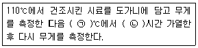
- ㉠ 400, ㉡ 1
- ㉠ 400, ㉡ 2
- ㉠ 550, ㉡ 1
- ㉠ 550, ㉡ 2
(정답률: 52%)
68. 폐수 20mL를 취하여 산성과망간산칼륨법으로 분석하였더니 0.0⑤M-KMnO4 용액의 적정량이 4mL이었다. 이 폐수의 COD(mg/L)는? (단, 공시험값 = 0mL, 0.0⑤M-KMnO4용액의 f=1.00)
- 16
- 40
- 60
- 80
(정답률: 36%)
69. 총유기탄소 분석기기 내 산화부에서 유기탄소를 이산화탄소로 산화하는 방법으로 옳게 짝지은 것은?
- 고온연소 산화법, 저온연소 산화법
- 고온연소 산화법, 전기전도도 산화법
- 고온연소 산화법, 과황산 열 산화법
- 고온연소 산화법, 비분산적외선 산화법
(정답률: 45%)
70. “정확히 취하여” 라고 하는 것은 규정한 양의 액체를 무엇으로 눈금까지 취하는 것을 말하는가?
- 메스실린더
- 뷰렛
- 부피피펫
- 눈금 비이커
(정답률: 67%)
71. ppm을 설명한 것으로 틀린 것은?
- ppb농도의 1000배 이다.
- 백만분율이라고 하나.
- mg/kg이다.
- %농도의 1/1000 이다.
(정답률: 58%)
72. BOD 측정 시 산성 또는 알칼리성 시료에 대하여 전처리를 할 때 중화를 위해 넣어주는 산 또는 알칼리의 양은 시료량의 몇 %가 넘지 않도록 하여야 하는가?
- 0.5
- 1.0
- 2.0
- 3.0
(정답률: 44%)
73. 수질오염공정시험기준에서 기체크로 마토그래피로 측정하지 않는 항목은?
- 유기인
- 음이온계면활성제
- 폴리클로리네이티드비페닐
- 알킬수은
(정답률: 46%)
74. 총 질소-연속흐름법에 관한 내용으로 ( )에 옳은 것은?
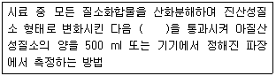
- 수산화나트륨(0.025N)용액 칼럼
- 무수황산나트륨 환원 칼럼
- 환원증류ㆍ킬달 칼럼
- 카드뮴-구리환원 칼럼
(정답률: 44%)
75. 하수 및 폐수 종말처리장 등의 원수, 공정수, 배출수 등의 개수로의 유량을 측정하는데 사용하는 웨어의 정확도 기준은? (단, 실제유량에 대한 %)
- ± 5%
- ± 10%
- ± 15%
- ± 25%
(정답률: 43%)
76. 시료의 전처리 방법 중 유기물을 다량 함유하고 있으면서 산분해가 어려운 시료에 적용하는 방법은?
- 질산-염산 산분해법
- 질산 산분해법
- 마이크로파 산분해법
- 질산-황산 산분해법
(정답률: 45%)
77. 일반적으로 기체크로마토그래피의 열전도도 검출기에서 사용하는 운반기체의 종류는?
- 헬륨
- 질소
- 산소
- 이산화탄소
(정답률: 58%)
78. 카드뮴을 자외선/가시선 분광법으로 측정할 떄 사용되는 시약으로 가장 거리가 먼 것은?
- 수산화나트륨용액
- 요오드화칼륨용액
- 시안화칼륨용액
- 타타르산용액
(정답률: 42%)
79. 전기전도도 측정에 관한 설명으로 틀린 것은?
- 용액이 전류를 운반할 수 있는 정도를 말한다.
- 온도차에 의한 영향이 적어 폭 넓게 적용된다.
- 용액에 담겨있는 2개의 전극에 일정한 전압을 가해주면 가한 전압이 전류를 흐르게 하며, 이 떄 흐르는 전류의 크기는 용액의 전도도에 의존한다는 사실을 이용한다.
- 용액 중의 이온세기를 신속하게 평가할 수 있는 항목으로 국제적으로 S(Siemens)단위가 통용되고 있다.
(정답률: 53%)
80. 자외선/가시선 분광버으로 아연을 정량하는 방법으로 ( )에 옳은 내용은?
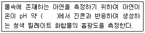
- 4
- 9
- 10
- 12
(정답률: 54%)
5과목: 수질환경관계법규
81. 사업장의 규모별 구분에 관한 내용으로 ( )에 맞는 내용은?
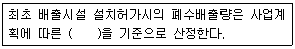
- 예상용수사용량
- 예상폐수배출량
- 예상하수배출량
- 예상희석수사용량
(정답률: 49%)
82. 환경정택기본법령에 의한 수질 및 수생태계 상태를 등급으로 나타내는 경우 ‘좋음’ 등급에 대해 설명한 것은? (단, 수질 및 수생태계 하천의 생활 환경기준)
- 용존산소가 풍부하고 오염물질이 거의 없는 청정 상태에 근접한 생태계로 침전 등 간단한 정수처리 후 생활용수로 사용할 수 있음
- 용존산소가 풍부하고 오염물질이 거의 없는 청정 상태에 근접한 생태계로 여과ㆍ침전 등 간단한 정수처리 후 생활용수로 사용할 수 있음
- 용존산소가 많은 편이고 오염물질이 거의 없는 청정 상태에 근접한 생태계로 여과ㆍ침전ㆍ살균 등 일반적인 정수처리 후 생활용수로 사용할 수 있음
- 용존산소가 많은 편이고 오염물질이 거의 없는 청정 상태에 근접한 생태계로 활성탄 투입 등 일반적인 정수처리 후 생활용수로 사용할 수 있음
(정답률: 55%)
83. 조치명령 또는 개선명령을 받지 아니한 사업자가 배출허용 기준을 초과하여 오염물질을 배출하게 될 때 환경부장관에게 제출하는 개선계획서에 기재할 사항이 아닌 것은?
- 개선사유
- 개선내용
- 개선기간 중의 수질오염물질 예상배출량 및 배출농도
- 개선 후 배출시설의 오염물질 저감량 및 저감효과
(정답률: 43%)
84. 공공폐수처리시설 배수설비의 설치방법 및 구조기준에 관한 내용으로 ( )에 맞는 것은?
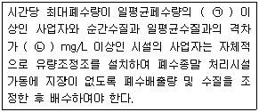
- ㉠ 2배, ㉡ 100
- ㉠ 2배, ㉡ 200
- ㉠ 3배, ㉡ 100
- ㉠ 3배, ㉡ 200
(정답률: 33%)
85. 수질오염방지시설 중 화학적 처리시설이 아닌 것은?
- 농축시설
- 살균시설
- 흡착시설
- 소각시설
(정답률: 32%)
86. 총량관리 단위유역의 수질 측정방법 중 측정수질에 관한 내용으로 ( )에 맞는 것은?
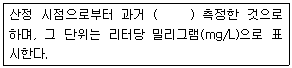
- 1년간
- 2년간
- 3년간
- 5년간
(정답률: 41%)
87. 폐수무방류배출시설의 세부 설치기준으로 틀린 것은?
- 특별대책지역에 설치되는 경우 폐수배출량이 200m3/day 이상이면 실시간 확인 가능한 원격유량감시장치를 설치하여야 한다.
- 폐수는 공정된 관로를 통하여 수집ㆍ이송ㆍ처리ㆍ저장되어야 한다.
- 특별대책지역에 설치되는 시설이 1일 24시간 연속하여 가동되는 것이면 배출 폐수를 전량 처리할 수 있는 예비 방지시설을 설치하여야 한다.
- 폐수를 고체 상태의 폐기물로처리하기 위하여 증발ㆍ농축ㆍ건조ㆍ탈수 또는 소각시설을 설치하여야 하며, 탈수 등 방지시설에서 발생하는 폐수가 방지시설에 재유입되지 않도록 하여야 한다.
(정답률: 39%)
88. 수계영향권별 물환경 보전에 관한 설명으로 옳은 것은?
- 환경부장관은 공공수역의 관리ㆍ보전을 위하여 국가 물환경관리기본계획을 10년마다 수립하여야 한다.
- 시ㆍ도지사는 수계영향권별로 오염원의 종류, 수질오염물질 발생량 등을 정기적으로 조사하여야 한다.
- 환경부장관은 국가 물환경기본계획에 따라 중권역의 물화경관리계획을 수립하여야 한다.
- 수생태계 복원계획의 내용 및 수립 절차 등에 필요한 사항은 환경부령으로 정한다.
(정답률: 43%)
89. 중점관리저수지의 관리자와 그 저수지의 소재지를 관할하는 시ㆍ도지사가 수립하는 중점 관리저수지의 수질오염방지 및 수질개선에 관한 대책에 포함되어야 하는 사항으로 ( )에 옳은 것은?
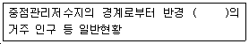
- 500m 이내
- 1km 이내
- 2km 이내
- 5km 이내
(정답률: 55%)
90. 대권역 물환경관리계획의 수립 시 포함되어야 할 사항으로 틀린 것은?
- 상수원 및 물 이용현황
- 물환경의 변화 추이 및 물환경목표기준
- 물환경 보전조치의 추진방향
- 물환경 관리 우선순위 및 대책
(정답률: 35%)
91. 시ㆍ도지사가 측정망을 이용하여 수질오염도를 상시 측정하거나 수생태계 현황을 조사한 경우, 결과를 몇 일 이내에 환경부장관에게 보고 하여야 하는지 ( )에 맞는 것은?
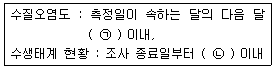
- ㉠ 5일, ㉡ 1개월
- ㉠ 5일, ㉡ 3개월
- ㉠ 10일, ㉡ 1개월
- ㉠ 10일, ㉡ 3개월
(정답률: 44%)
92. 특별자치시장ㆍ특별자치도지사ㆍ시장ㆍ군수ㆍ구청장이 하천ㆍ호소의 이용목적 및 수질상황 등을 고려하여 대통령령이 정하는 바에 따라 낚시금지구역 또는 낚시제한구역을 지정할 경우 누구와 협의하여야 하는가?
- 수면관리자
- 지방의회
- 해양수산부장관
- 지방환경청장
(정답률: 52%)
93. 시ㆍ도지사는 오염총량관리기본계획을 수립하거나 오염총량관리기본계획 중 대통령령이 정하는 중요한 사항을 변경하는 경우 환경부장관의 승인을 얻어야 한다. 중요한 사항에 해당되지 않는 것은?
- 해당 지역 개발계획의 내용
- 지방자치단체별ㆍ수계구간별 오염부하량의 할당
- 관할 지역에서 배출되는 오염부하량의 총량 및 저감계획
- 최종방류구별ㆍ단위기간별 오염부하량 할당 및 재출량 지정
(정답률: 36%)
94. 특정수질유해물질로만 구성된 것은?
- 시안화합물, 셀레늄과 그 화합물, 벤젠
- 시안화합물, 바륨화합물, 페놀류
- 벤젠, 바륨화합물, 구리와 그 화합물
- 6가크롬 화합물, 페놀류, 니켈과 그 화합물
(정답률: 49%)
95. 공공수역에 분뇨ㆍ가축분뇨 등을 버린 자에 대한 벌칙기준은?
- 5년 이하의 징역 또는 5천만원 이하의 벌금
- 3년 이하의 징역 또는 3천만원 이하의 벌금
- 2년 이하의 징역 또는 2천만원 이하의 벌금
- 1년 이하의 징역 또는 1천만원 이하의 벌금
(정답률: 50%)
96. 위임업무 보고사항 중 업무내용에 따른 보고횟수가 연 1회에 해당되는 것은?
- 기타 수질오염원 현황
- 환경기술인의 자격별ㆍ업종별 현황
- 폐수무방류배출시설의 설치허가 현황
- 폐수처리업에 대한 등록ㆍ지도단속실적 및 처리실적 현황
(정답률: 51%)
97. 물환경보전법에서 사용하는 용어의 정의로 틀린 것은?
- 비점오염원 : 도시, 도로, 농지, 사지, 공사장등으로서 불특정 장소에서 불특정하게 수질오염물질을 배출하는 배출원을 말한다.
- 기타수질오염원 : 점오염원 및 비점오염원으로 관리되지 아니하는 수질오염물질 배출원으로서 대통령령으로 정하는 것을 말한다.
- 폐수 : 물에 액체성 또는 고체성의 수질오염물질이 혼입되어 그대로 사용할 수 없는 물을 말한다.
- 강우유출수 : 비점오염원의 수질오염물질이 섞여 유출되는 빗물 또는 눈 녹은 물 등을 말한다.
(정답률: 54%)
98. 오염총량초과부과금 산정 방법 및 기준에서 적용되는 측정유량(일일유량 산정 시 적용) 단위로 옳은 것은?
- m3/min
- L/min
- m3/sec
- L/sec
(정답률: 59%)
99. 수질오염물질의 배출허용기준에서 나지역의 화학적 산소요구량(COD)의 기준(mg/L 이하)은? (단, 1일 폐수 배출량이 2000m3미만인 경우)(관련 규정 개정전 문제로 여기서는 기존 정답인 2번을 누르면 정답 처리됩니다. 자세한 내용은 해설을 참고하세요.)
- 150
- 130
- 120
- 90
(정답률: 52%)
100. 수질오염경보의 종류별ㆍ경보단계별 조치사항 중 상수원 구간에서 조류경보 ‘경계’ 단계 발령시 조치사항이 아닌 것은?
- 정수의 독소분석 시시
- 황토 등 흡착제 살포 등을 이용한 조류제거 조치 실시
- 주변오염원에 대한 단속 강화
- 어패류 어획ㆍ식용, 가축 방목 등의 자제 권고
(정답률: 45%)